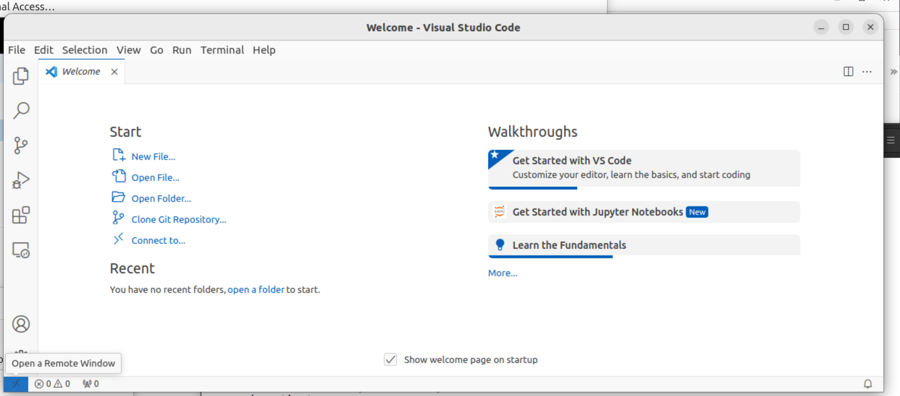
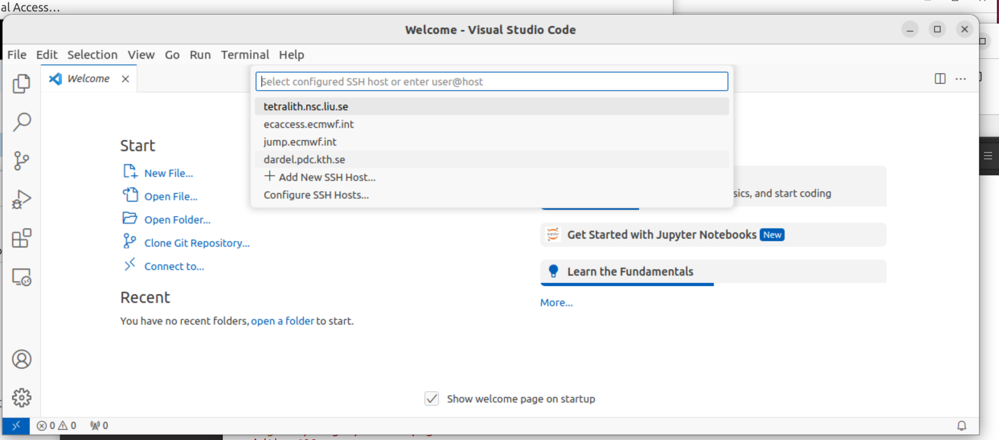
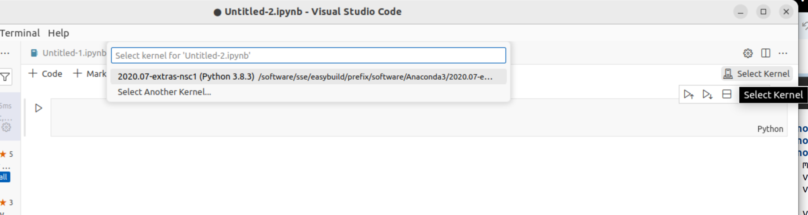
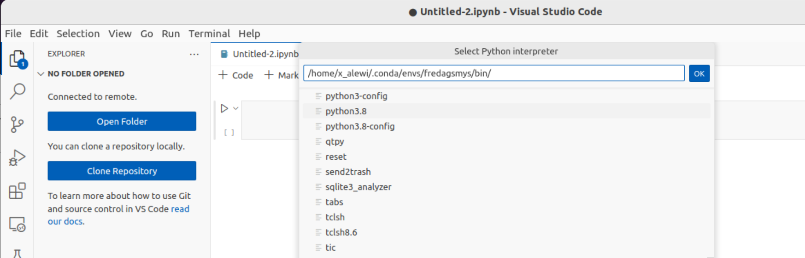

VSCode on Tetralith¶
Notebook through VSCode¶
Start a Notebook on the log in node¶
First of all, make sure you have a conda environment on Tetralith with jypyter installed. Instructions for how to set up a conda environmnet can be found here.
Start VSCode on your local machine. You will need the following extensions:
Jupyter
Remote - SSH
Remote Explorer
Python
Connect to Tetralith by clicking the button in the lower left corner “Open a Remote Window”.
In the prompt that will appear at the top of the window, click on “Connect to Host”. If this is the first time you connect to Tetralith through VSCode, choose “+ Add New SSH Host”
Enter ssh x_username(at)tetralith.nsc.liu.se. You will be prompted to updade your SSH configuration file.
Go back to step 2 and select tetralith in the drop down menu. Enter your log in credentials.
You might need to reinstall/enable Jupyter for remote host. Check the extension manager.
Go to “File” and click “New file…”. Select Jupyter Notebook from the drop down menu that appears.
Once the notebook is open, you can choose which environment you would like to use. Click on “Select kernel” in the upper right corner. If you don’t already have a conda environment on Tetralith, you can find instructions here
Click on the environement you would like to use.
If you don’t find your previously installed conda environments you can make VSCode searh specific paths. Open the “Command Palette…” in the “View” menu. Select “Python: Select Interpreter..” and then “Enter interpreter path..” in the drop down menu that appears. Then click “Find…” and enter a path for python in your environment.
You will now be running your notebook on the Tetralith log in node.
{kind=link}
{kind=link}
{kind=link}
{kind=link}
Start a notebook on a compute node¶
First work through point 1-5 above.
Start an interactive job in the terminal:
interactive -A naiss2024-1-3 --reservation=lsda -t 01:00:00 -n 1
Load an Anaconda module and activate an environment. Instructions for how to work with conda environments on Tetralith can be found here.
Start a Jupyter server and specify which node you are logged in to, and filter the output.
jupyter-notebook --no-browser --ip=nXX >/dev/null 2>&1 &
List the notebooks running on the node. It might take a few seconds before the the server is up and running. It will look something like this:
$ jupyter notebook list
Currently running servers:
http://n2:8888/?token=ee5b2a3739b78a8a62371147fe3c06e1466213d787e0da4a :: /home/x_alewi
Go to “File” and click “New file…”. Select Jupyter Notebook from the drop down menu that appears.
Click on “Select kernel” in the upper right corner, then select “Existing Jupyter server” from the drop down menu. Paste the link to the running notebook from step 9 into the drop down menu.
{kind=link}
Your notebook should now be running on a compute node.